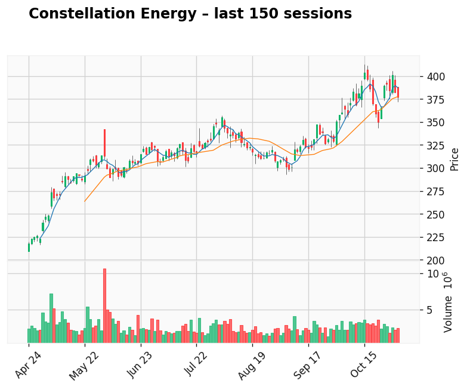

AI-generated analysis combining predictive modeling and recent market context.
Applied Materials
Gap: 56.96% Candle: 62.50% (black)
Applied Materials shows bearish sentiment (62.50%, gap 56.96%). Applied Materials shows bearish sentiment (68.34%, gap 42.27%).Applied Materials is also starting to draw criticism for what some investors see as an overinvestment problem, with the company ramping up spending and capacity on the assumption that the current semiconductor upcycle and AI boom will continue almost unabated. After pouring billions into new fabs, equipment R&D, and long-term supply commitments, questions are emerging about whether demand will justify this scale of expansion once the cycle inevitably cools. The risk is that Applied Materials could find itself with excess capacity, elevated operating costs, and slower returns on capital just as customers begin to tighten their own investment plans. At the same time, regulatory and geopolitical uncertainties in key markets like China add another layer of risk to projects with long payback periods. As a result, sentiment around the stock has shifted from “can’t lose AI winner” to a more cautious view that the company may have pushed too hard, too fast. The next few quarters will need to prove that Applied’s aggressive capex and expansion strategy can translate into durable, profitable growth rather than becoming a textbook case of overinvestment at the top of the cycle..

Constellation Energy
Gap: 13.33% Candle: 60.36% (black)
Constellation Energy shows bearish sentiment (60.36%, gap 13.33%). Constellation Energy has recently found itself under growing scrutiny as concerns rise that the company’s rapid expansion and aggressive investment positioning may now be outpacing realistic growth expectations. After a year of strong stock performance fueled by optimism around nuclear power, AI-driven energy demand and large corporate power contracts, the most recent earnings cycle fell short of market expectations and triggered a more cautious outlook from analysts. Added to that, Constellation faces the challenge of operating in an environment where energy markets remain volatile and heavily influenced by regulation, while its exposure to wholesale pricing—rather than regulated utility rates—makes its business inherently sensitive to swings in demand, policy shifts, and macroeconomic pressure. With major acquisitions, including the Calpine deal, still in the integration phase, investors are beginning to question whether the company can deliver the long-term returns needed to justify its valuation. The mood around Constellation hasn’t turned negative outright, but the narrative has clearly shifted: instead of being seen as a guaranteed winner of the energy transition, it is increasingly viewed as a company that now must prove that its growth strategy is sustainable, rather than speculative. The coming quarters will determine whether Constellation can translate its bold bets into durable performance—or whether enthusiasm has simply gotten ahead of fundamentals.
